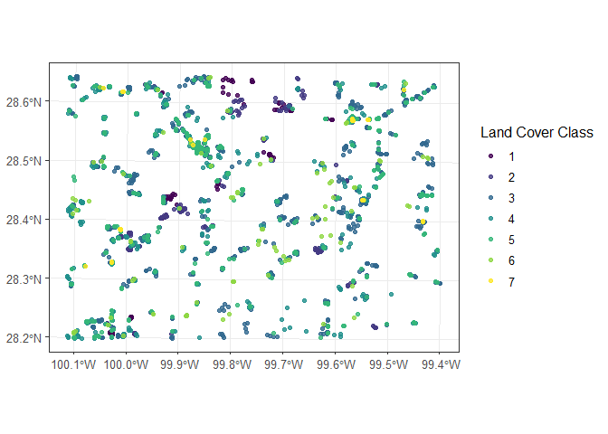
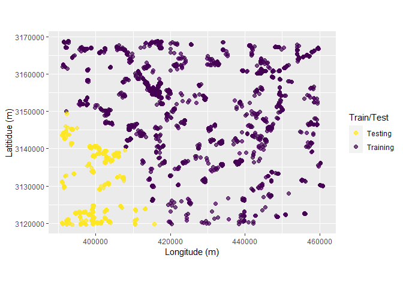

The goal of the stdcab package is to apply spatial thinning on multi-class spatial point data, spatial cluster analysis for random and repeated cross-validations which partitions data into training and testing set compatible to tidy-modeling resamples. The package allows to run semivariance analysis, plotting and spatial blocking of observations.
Installation
You can install the released version of stdcab from CRAN with:
install.packages("stdcab")To install the latest stdcab version from GitHubuse:
remotes::install_github('suvedimukti/stdcab')
#> Downloading GitHub repo suvedimukti/stdcab@HEAD
#>
#> * checking for file 'C:\Users\suved\AppData\Local\Temp\RtmpYHdnpX\remotesd244d754d7a\suvedimukti-stdcab-4d281bd/DESCRIPTION' ... OK
#> * preparing 'stdcab':
#> * checking DESCRIPTION meta-information ... OK
#> * checking for LF line-endings in source and make files and shell scripts
#> * checking for empty or unneeded directories
#> * building 'stdcab_0.1.0.tar.gz'
#>
#> Installing package into 'C:/Users/suved/Documents/R/win-library/4.1'
#> (as 'lib' is unspecified)Repeated Cluster CV: Rsample compatible
This function is extended based on spatial_cluster_sample, which is a wrapper around spatial_clustering_cv function of sptialsample package.
Load dataset
# load dataset
library(stdcab)
#> Loading required package: sf
#> Linking to GEOS 3.9.1, GDAL 3.2.1, PROJ 7.2.1; sf_use_s2() is TRUE
data(landcover)
# create another dataset based on landcover data that comes with the packge
#
dspatial<- landcover
# examine data
head(dspatial)
#> Simple feature collection with 6 features and 32 fields
#> Geometry type: POINT
#> Dimension: XY
#> Bounding box: xmin: 392210.5 ymin: 3119625 xmax: 399267.2 ymax: 3119778
#> Projected CRS: NAD83 / UTM zone 14N
#> MBLU MDIS MENT MGRN MHOM MNDSI MNDVI
#> 1 66.63188 1.6617853 2.950356 79.29950 0.4467591 0.27364541 0.3530703
#> 2 63.39825 1.9870977 2.960603 73.69209 0.4019742 0.29720028 0.4029944
#> 3 69.88172 1.6976533 2.942974 80.93514 0.4405100 0.22758467 0.2885415
#> 4 90.20121 1.1538607 2.595928 101.55721 0.5584459 0.08908733 0.0774211
#> 5 92.37401 0.9766353 2.472715 101.19852 0.6005212 0.04736083 0.0158674
#> 6 63.28209 1.6095205 2.905691 78.96302 0.4605569 0.32877674 0.4410174
#> MNDWI MNIR MPC1 MPC2 MPC23 MRED MSAVI MSTD
#> 1 0.51515239 138.9199 159.1613 102.4536 202.6218 66.55164 0.51515239 21.25050
#> 2 0.55808490 137.4047 148.8866 104.3592 204.5810 58.23234 0.55808490 19.98415
#> 3 0.43974239 128.5910 161.2001 102.6947 190.8658 71.33220 0.43974239 21.58185
#> 4 0.13333992 121.6026 200.3034 100.9832 169.4937 104.52521 0.13333992 26.70559
#> 5 0.02596568 111.4324 200.0531 100.8161 158.5089 108.05662 0.02596568 26.70048
#> 6 0.60552987 156.1672 159.4131 102.6292 221.1018 60.83709 0.60552987 21.32887
#> SAVG SAVI SBLU SDIS SENT SGRN SHOM
#> 1 0.7719360 0.09421593 8.007267 0.7173829 0.2979607 13.223900 0.1305707
#> 2 1.0951935 0.15705697 9.696568 0.9694563 0.3330230 13.901611 0.1387346
#> 3 0.8193193 0.10658609 7.640749 0.7711866 0.2884212 11.779700 0.1295736
#> 4 0.6762000 0.12961513 8.087468 0.6171818 0.4649801 9.553970 0.1582553
#> 5 0.5402425 0.09479591 5.684382 0.5020353 0.4690081 6.982191 0.1469829
#> 6 1.0425932 0.09469646 8.115348 0.8179208 0.3255548 11.952452 0.1369844
#> SHPI SNDSI SNDVI SNIR SPC1 SPC2 SPC3 SRED
#> 1 2.064817 0.06072264 0.09421593 19.990943 22.00438 17.457164 3.453199 13.53963
#> 2 2.818856 0.09894260 0.15705697 26.054171 24.42861 25.079633 4.042181 17.20263
#> 3 2.515565 0.05936204 0.10658609 16.465150 20.52350 14.532001 4.098715 14.22547
#> 4 2.451424 0.05418211 0.12961513 12.712686 18.92016 12.433632 3.768943 14.64595
#> 5 1.591254 0.04073361 0.09479591 9.757403 13.83072 8.766206 3.414756 10.42752
#> 6 1.975009 0.06062318 0.09469646 18.062159 20.22403 16.856885 3.163099 13.56793
#> SSTD geometry Class_name
#> 1 2.182833 POINT (392210.5 3119625) 4
#> 2 2.590231 POINT (395942.6 3119661) 4
#> 3 1.982273 POINT (393647 3119704) 4
#> 4 2.066033 POINT (397385.1 3119726) 3
#> 5 1.399689 POINT (397434.5 3119731) 3
#> 6 2.185156 POINT (399267.2 3119778) 4
# Class_name is the dependent (response ) data with seven classes (1 through 7)Visualize the data
# load ggplot 2 for visualization
library(ggplot2)
ggplot(data = dspatial)+
geom_sf(aes(colour = factor(Class_name)), size = 1.5, alpha = 0.8)+
scale_colour_viridis_d()+
labs(color = "Land Cover Class")+
theme_bw(12)
Apply repeated cluster sampling on sf data
To make visualization easy lets make five folds and five repeats resulting 25 splits of data based on kmeans clustering.
set.seed(1318)
spc_rcv<- repeated_spatial_cluster_sample(data = dspatial, v = 5, repeats = 5,
coords = NULL, spatial = TRUE, clust_method = "kmeans",
dist_clust = NULL)
spc_rcv
#> # A tibble: 25 x 3
#> splits id id2
#> <list> <chr> <chr>
#> 1 <split [1503/419]> Repeat1 Fold1
#> 2 <split [1632/290]> Repeat1 Fold2
#> 3 <split [1573/349]> Repeat1 Fold3
#> 4 <split [1353/569]> Repeat1 Fold4
#> 5 <split [1627/295]> Repeat1 Fold5
#> 6 <split [1331/591]> Repeat2 Fold1
#> 7 <split [1648/274]> Repeat2 Fold2
#> 8 <split [1482/440]> Repeat2 Fold3
#> 9 <split [1654/268]> Repeat2 Fold4
#> 10 <split [1573/349]> Repeat2 Fold5
#> # ... with 15 more rowsVisualize clusters
Following chunk of code is a function to run each split at a time to visualize Analysis or Training and Assessment or Testing set in each fold and repeats.
library(magrittr) #
#>
#> Attaching package: 'magrittr'
#> The following object is masked from 'package:purrr':
#>
#> set_names
fplot_splits <- function(split) {
gp <- analysis(split) %>%
dplyr::mutate(analysis = "Training") %>%
dplyr::bind_rows(assessment(split) %>%
dplyr::mutate(analysis = "Testing")) %>%
ggplot(aes(X, Y, color = analysis)) +
geom_point(alpha = 0.7, size = 2) +
coord_fixed() +
labs(color = "Train/Test") +
scale_color_viridis_d(direction = -1) +
xlab("Longitude (m)") +
ylab("Latitidue (m)")
print(gp)
}Plotting
# plot using walk function from purrr package
purrr::walk(spc_rcv$splits, fplot_splits)